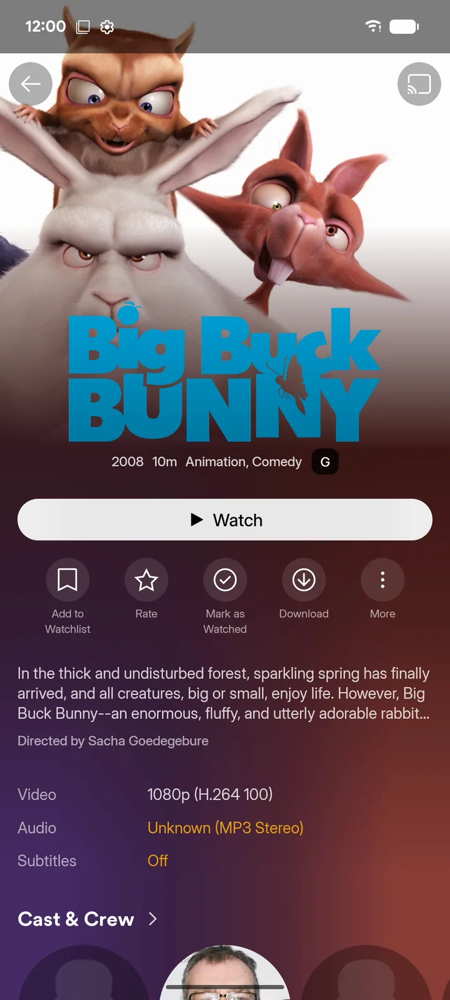

zurg+rex para Android y Google TV
zurg+rex es un servidor de Plex en tu teléfono. zurg trae tus cuentas de debrid y Usenet, y rex las sirve a todas las apps de Plex de tu casa, con pósters, temporadas y progreso de reproducción. Funciona en un teléfono, tablet, Android TV, Google TV o Fire TV, sin necesidad de ordenador.
Viene con un patrocinio. ¿No tienes patrocinio? rex para Android es gratis y reproduce lo que traen sus addons.
| La app | En la app de Plex | En cualquier otra app de Plex |
|---|---|---|
 |
 |
 |
Antes de empezar
Paso 1. Descárgala
En el dispositivo, abre la página de descarga, con la sesión iniciada en GitHub con tu cuenta de patrocinador, y elige el archivo para su procesador:
Un solo archivo funciona igual en teléfonos y en TVs.
¿GitHub dice 404? La cuenta con la que has iniciado sesión todavía no tiene acceso de patrocinador. Si acabas de patrocinar, primero acepta la invitación; las invitaciones se envían en un máximo de 15 minutos.
Paso 2. Instálala
Abre el archivo descargado y permite la instalación desde la app que lo abrió. Android o Play Protect pueden pedirte que confirmes.
Lo que deberías ver. zurg+rex en tu lista de apps.
Paso 3. Inicia sesión en GitHub e instala el motor
Abre la app. Dice Welcome to zurg+rex.
- Pulsa Sign in with GitHub. La app muestra un código: pulsa Open GitHub, introduce el código y aprueba. GitHub pide acceso a
repoporque las versiones para patrocinadores son privadas. - Instala el motor. El motor son el propio zurg y rex, guardados en un paquete aparte para que se actualicen por separado de la app. Pulsa Install. Android pregunta antes de instalarlo: permítelo.
Lo que deberías ver. Add your providers.
Paso 4. Añade tus proveedores
- Pulsa Add an account y elige el proveedor.
- Para una cuenta de debrid, pega su token en Provider token. Para Usenet, rellena NNTP server, Port, Username, Password y Connections.
- Pulsa Test account y luego Add provider.
Añade todas las cuentas que tengas; Account name sirve para distinguir dos cuentas de un mismo proveedor. El límite de conexiones de una cuenta de Usenet cuenta a todas las demás apps y dispositivos que la usen.
Paso 5. Inicia tu biblioteca
- Elige Phone, Tablet, TV box o TV stick. Las opciones más pequeñas usan menos memoria y cachés más pequeños.
- Permite las notificaciones y deja que la app se ejecute en segundo plano. Activa Start after reboot si este dispositivo debe servir tu biblioteca todo el tiempo.
- Pulsa Start my library.
Lo que deberías ver. Status muestra Ready for your players y cuenta tus releases. La primera carga de una cuenta grande puede tardar varios minutos.
Paso 6. Inicia sesión en Plex
En Status, debajo de rex for the Plex apps, pulsa Sign in to Plex.
- En un móvil o tableta tu navegador abre la página de inicio de sesión de Plex. Inicia sesión ahí.
- En una TV la app muestra On any device, go to plex.tv/link and enter seguido de un código. Introdúcelo en tu móvil u ordenador.
Usa la cuenta con la que tienes iniciada sesión en tus apps de Plex.
Qué deberías ver. Ready for the Plex app, con un botón Open Plex cuando Plex esté en este dispositivo.
Paso 7. Mira contenido en una app de Plex
Abre cualquier app de Plex con la misma cuenta: en este dispositivo, en tu TV, en otro móvil o en un ordenador de casa. Tu servidor aparece con el nombre de este dispositivo, con las bibliotecas Debrid Movies y Debrid TV. Pulsa reproducir.
rex convierte lo que un reproductor no puede reproducir, usando el codificador de vídeo del propio dispositivo.
Obtén más títulos con nombre
Abre Settings, Library y pega tu clave de API de DMM en Dmm api key, luego guarda. zurg entonces le pregunta a DMM qué es cada archivo. Sin la clave, zurg lo deduce a partir del nombre del lanzamiento, y menos títulos obtienen su nombre y póster.
Un título que aún parece incorrecto se puede corregir en una app de Plex: abre su menú ⋯ y elige Fix Match.
El campo está en las nightly desde el 14 de noviembre de 2026. En una más antigua, añade dmm_api_key: YOUR_DMM_API_KEY en Settings, Advanced. La misma clave sirve para leer tu lista de deseados de DMM.
Complementos
Los addons añaden más contenido para ver en rex, además de tu biblioteca. Abre Addons: el addon de Internet Archive viene instalado y añade películas de dominio público, y el repositorio rex-addons ya aparece en la lista. Añade otro repositorio con su enlace, ábrelo e instala lo que ofrezca.
Cada addon indica a qué sitios web puede acceder, y una actualización que llegue a sitios nuevos te pide permiso antes. Instala addons solo de personas en las que confíes. Log muestra lo que un addon ha hecho recientemente. Al quitar un addon, solo se eliminan sus títulos.
Otros reproductores en este dispositivo
No necesitas una app de Plex para ver.
- Library navega por tus carpetas y reproduce un archivo en el reproductor que elijas. More ofrece otro reproductor y las acciones de la release: repair, rename, tags, show all files y delete. Actúan sobre toda la release, y delete pide confirmación antes de borrarla de tu cuenta del proveedor.
- La app Files y los selectores de documentos muestran la misma biblioteca bajo la raíz de zurg. Abre tu reproductor una vez y termina su configuración antes de elegirlo desde Files.
- Reproductores WebDAV como VLC, Kodi y Nova usan
http://127.0.0.1:9999/dav/como origen. Status muestra la dirección si cambiaste el puerto.
En una TV, muévete con el D-pad y Select, vuelve atrás con Back, y abre las acciones de una release con Menu o More. Selecciona un campo de texto para escribir en él y pulsa Back para seguir.
Comparte con otros reproductores en casa
Las apps de Plex en casa no necesitan nada más: encuentran rex por sí solas. Para un reproductor WebDAV en otro dispositivo, abre Settings, Connection y activa Expose on local network. zurg crea un nombre de usuario y una contraseña y muestra la dirección que hay que introducir en ese reproductor.
Usa esto en una red en la que confíes: la contraseña viaja sin cifrar. Está desactivado hasta que lo actives.
Mantenlo en funcionamiento
- La notificación muestra el estado del servidor y tiene Stop. Un mosaico de Ajustes rápidos también lo inicia y lo detiene.
- Algunos teléfonos detienen las apps en segundo plano de todos modos. Don't kill my app explica lo que necesita la tuya.
- Updates busca una app nueva y un motor nuevo; se actualizan por separado. Si un nightly nuevo da problemas en tu dispositivo, pulsa Show engine versions e instala el que funcionaba. Detén tu biblioteca en Status primero.
- Settings tiene Create backup y Restore backup. Una copia de seguridad guarda tus contraseñas y tokens, así que mantenla en privado. Detén tu biblioteca antes de restaurar.
- Desactiva rex en Settings, Connection, rex for the Plex apps. Así zurg deja de alimentarlo.
Qué envía la app y a dónde
zurg+rex no tiene anuncios ni analítica. Esto es todo lo que sale de tu dispositivo:
Tu token de GitHub se guarda cifrado en el dispositivo. Al desinstalar la app se borra todo lo que guardaba.
Límites
- El dispositivo es el servidor. Mantenlo encendido, conectado y enchufado. Convertir vídeo es lento en una caja barata.
- Se reproduce en casa. Fuera de casa, las apps de Plex necesitan una dirección HTTPS que llegue al dispositivo, lo que requiere un port forward en tu router. Consulta Use it outside your home.
- Usenet requiere Android de 64 bits. Un dispositivo de 32 bits solo ejecuta bibliotecas de debrid.
- No está en Google Play. Se actualiza desde dentro de la app, en Updates.
Solución de problemas
Si support pide logs, abre Logs y pulsa Send logs to support. Verás todo antes de que se envíe nada; luego pulsa Send y publica el código que obtengas.
¿Atascado? Pregunta en el foro zurg-support de Discord.